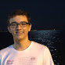

Sou estudante de graduação em Engenharia Eletrônica e de Computação na Universidade Federal do Rio de Janeiro (UFRJ).
Também faço parte do Grupo de Processamento de Áudio (GPA), no laboratório SMT.

Felipe BordaloPortfólio pessoal
Estudante de Engenharia Eletrônica e de Computação na UFRJ, interessado em tecnologia, computação e processamento de áudio.
Visite meu GitHubSou estudante de graduação em Engenharia Eletrônica e de Computação na Universidade Federal do Rio de Janeiro (UFRJ).
Também faço parte do Grupo de Processamento de Áudio (GPA), no laboratório SMT.
Meu percurso acadêmico conecta engenharia, computação e processamento de áudio. Quero seguir aprendendo e explorar ideias que unam essas áreas.
Confira meus projetos e acompanhe meu trabalho no GitHub.